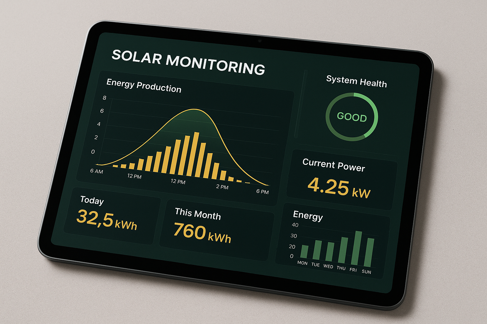

Operations guide for maximizing solar system performance in Panama's tropical climate

REAL-TIME MONITORINGWhat the FusionSolar and SolarEdge monitoring platforms show your clients
Live power output in kW, updated every 5 minutes. Daily, monthly, and lifetime energy graphs.
Track accumulated savings based on local electricity rates and net metering credits.
Automatic alerts via app push, email, and SMS for system anomalies and faults.
Weather station data integration for performance correlation and forecasting.
Proactive maintenance maximizes system lifespan and ROI
Remove dust, bird droppings, and organic debris. Critical in Panama's dry season (December-April).
Comprehensive visual and electrical inspection of all system components.
Keep inverter software current for optimal performance and security patches.
Verify cable integrity, connector condition, and conduit sealing in Panama's humid climate.
Common issues and resolution procedures for Panama solar installations
System producing less than expected for weather conditions.
Inverter displaying error code or not producing AC output.
IR scan reveals abnormally hot cells or connections.
New shading sources affecting system after installation.
One or more strings not producing power or showing zero voltage.
Monitoring platform shows system offline or no data transmission.
Flexible maintenance plans for every client need
The numbers that matter for system health and client satisfaction
What triggers alerts, how they're classified, and response time commitments
Inverter stops producing AC power. Zero output during daylight hours. System completely down.
Response: 4 hours (Premium) / 24 hours (Standard)Grid voltage or frequency out of acceptable range. Inverter anti-islanding triggered. System shuts down for safety.
Response: Monitor — usually auto-recoversSystem producing 15%+ less than expected based on irradiance data. May indicate soiling, shading, or component degradation.
Response: 48 hours investigationOne string producing significantly less than others. Indicates potential panel, optimizer, or wiring issue.
Response: Next scheduled visitMonitoring data not received for 2+ hours during daylight. System may still be producing normally.
Response: Remote troubleshoot within 24hNew inverter firmware released by manufacturer. Schedule update during low-production hours.
Response: Schedule within 2 weeks